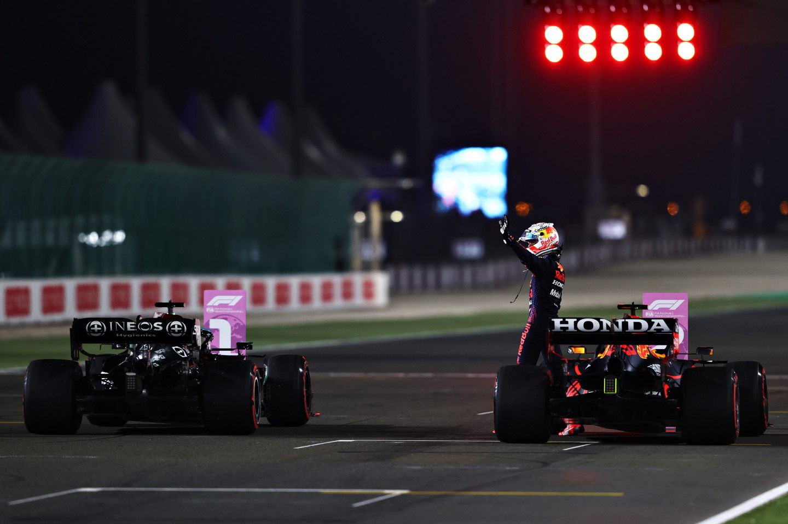

Второй этап подряд лидер чемпионата Макс Ферстаппен был вынужден минимизировать потери и лишь наблюдать, как его главный соперник летит к победе. Что на этот раз помешало Red Bull?
Перед началом гоночного уик-энда официальный поставщик шин Pirelli прогнозировал, что на трассе Лосаил основная нагрузка придется на задние колеса. Но на практике всё вышло с точностью до наоборот: наибольшей нагрузке подверглись как раз передние колеса.
«Сначала мы подумали, что причина в настройке машин: команды таким образом осознанно стараются снизить нагрузку на задние покрышки. Но, подробно изучив данные с тренировок, мы поняли, что ошиблись. Оказалась, что повышенное воздействие на переднюю ось связано с особенностью прохождения нескольких поворотов, в которых пилотам приходится одновременно тормозить и поворачивать», – говорит глава Pirelli Motorsport Марио Изола.
Какое отношение эта тенденция имеет к раскладу сил между двумя топ-командами? Самое что ни на есть прямое. Дело в том, что машина Red Bull Racing работает сбалансированнее при нагрузке на задние колеса, а Mercedes – наоборот, на передние. Так маятник и качнулся в сторону действующих чемпионов: если Хэмилтон наслаждался идеальным балансом и предельной точностью W12 в скоростных поворотах, из которых состоит почти вся катарская трасса, то Ферстаппен весь уик-энд промучался с управляемостью и так и не нашел ключ к стабильной работе передней оси.
В Катаре преимущество Льюиса Хэмилтона над Максом Ферстаппеном на прямых не было таким огромным, как в Бразилии – 3,4 км/ч разницы в гонке без слипстрима и DRS вместо 7,7 км/ч неделей ранее. Вероятно, это можно объяснить тем, что гонщик Mercedes использовал четвертый по счету двигатель в сезоне, а не свежий пятый. И всё же в квалификации Льюис привез своему основному сопернику 0,4 секунды. Причем большую часть времени он отыграл в скоростных поворотах, где у Red Bull Racing были проблемы с балансом – и не только из-за плохой работы передних шин.
Дело в том, что на свободных заездах у Red Bull Racing были проблемы с DRS – подвижная плоскость в открытом положении не выдерживала нагрузку. То же самое, кстати, было в Остине и Мехико. Во избежание поломки перед началом квалификации команда установила заднее антикрыло большего размера с высоким прижимом. На скоростной трассе в Катаре это было не лучшим решением и ещё сильнее испортило и без того скверный баланс RB16B.
Безусловно, штраф Макса Ферстаппена в пять позиций на стартовой решетке упростил задачу Льюису Хэмилтону в гонке. Тем более второй пилот Red Bull Racing Серхио Перес не прошел в третий сегмент квалификации и на старте был только 11-м. Вдобавок ко всему на первых кругах Льюис получил хороший буфер между собой и Максом в лице пилотов, выбравших на стартовый отрезок мягкие шины.
Ферстаппену потребовалось всего четыре круга, чтобы подняться с седьмого на второе место. Но к тому времени его главный соперник в чемпионате уже оторвался на четыре секунды. Сократить такое отставание в дальнейшем оказалось нереально: как только Макс что-то отыгрывал, Льюис тут же отвечал, взвинчивал темп и отрывался. Такая динамика привела к одинаковой стратегии для обоих лидеров.
Ферстаппен и Red Bull Racing, понимая, что не смогут бросить вызов Хэмилтону, перестраховались, провели вторую остановку, что, в свою очередь, позволило Mercedes и Хэмилтону сделать то же самое. Так что оба избежали рискованной стратегии одного пит-стопа которая была чревата проколом колеса, как у Боттаса, Норриса, Рассела и Латифи.
В самом конце гонки Ферстаппен даже решился на третий пит-стоп с целью показать лучший круг – отрыв от шедшего третьим Фернандо Алонсо позволял. И вот тут интересный момент: если бы не история с желтыми флагами в квалификации и штраф, то Макс вряд ли бы заработал бонусный балл, который может очень пригодиться ему в Абу-Даби. Ведь вместе с голландцем наказание получил Боттас. А предположим, не было всех этих пенализаций, но Хэмилтон всё равно оторвался бы, а Ферстаппен на последних кругах также шел бы вторым, Валттери Боттас был бы третьим. И тут скорее всего было бы два сценария: либо сам Ферстаппен не поехал бы за свежими шинами, поскольку вернулся бы на трассу позади второго пилота Mercedes. Либо Mercedes в последний момент позвала бы Валттери в боксы, и он отобрал бы лучший круг у Макса. Так что, как говорится, не было бы счастья, да несчастье помогло...